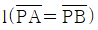
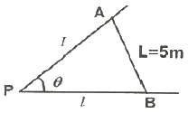
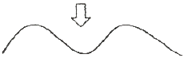
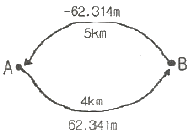
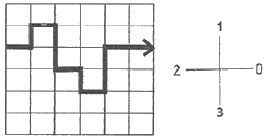
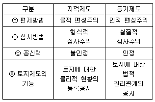

지적기사 (2020-06-06 기출문제)
1과목: 지적측량
1. 중부원점지역에 설치된 지적삼각점의 경위도좌표에 해당되는 것은?
- 북위 37°, 43‘ 23“ 동경 129° 58’ 53”
- 북위 36°, 56‘ 18“ 동경 128° 34’ 35”
- 북위 35°, 32‘ 36“ 동경 126° 24’ 36”
- 북위 34°, 23‘ 14“ 동경 125° 21’ 46”
(정답률: 64%)

2. 다음 중 경위의측량방법과 평판측량방법으로 세부측량을 할 때 측량 준비 파일 작성에 공통적으로 포함되는 사항이 아닌 것은?
- 도곽선과 그 수치
- 행정구역선과 그 명칭
- 측량대상 토지의 지번 및 지목
- 인근 토지의 경계점의 좌표 및 경계선
(정답률: 60%)
3. 경위의측량방법에 따른 세부측량의 기준으로 옳은 것은?
- 거리측정단위는 0.01cm로 한다.
- 경계점의 점간거리는 1회 측정한다.
- 관측은 30초독 이상의 경위의를 사용한다.
- 수평각의 관측은 1대회의 방향관측법이나 2배각의 배각법에 따른다.
(정답률: 63%)
4. 수평각 측정에 있어서 측점에 편심이 있었을 때 측정한 측각오차에 관한 설명 중 옳지 않은 것은?
- 측각오차는 편심량과 편심방향에 관계가 있다.
- 측각오차의 크기는 보통 측점거리에 비례한다.
- 편심방향이 시준방향에 직각인 경우에 측각오차가 가장 크다.
- 시준방향과 편심방향이 같을 때에는 측각오차가 거의 없다.
(정답률: 48%)
5. 평판측량방법으로 조준의를 사용하여 경사거리를 측정한 경과가 아래와 같은 경우 수평 거리가 옳은 것은? (단, 경사거리는 74.3m, 경사분획은 6.5이다.)
- 72.3m
- 74.1m
- 81.1m
- 82.3m
(정답률: 61%)
6. 각을 측정할 때 발생할 수 있는 오차에 해당되지 않는 것은?
- 정오차
- 과대오차
- 우연오차
- 확률중등오차
(정답률: 80%)
7. 토탈스테이션을 이용한 작업의 장점으로 가장 거리가 먼 것은?
- 각과 거리를 동시에 측정할 수 있다.
- 진지기록 장치를 사용할 수 있어 작업효율이 높다.
- 날씨나 장애물의 영향을 받지 않아 항상 작업이 가능하다.
- 측정에 있어 사용자에 따른 눈금읽기 오차로 인한 실수를 피할 수 있다.
(정답률: 85%)
8. 전파기 또는 광파기측량방법에 따라 다각망도선법으로 지적삼각보조점측량을 할 때 기지점과 교점을 포함하여 1도선의 점의수는 몇 점 이하로 하여야 하는가?
- 5점 이하
- 10점 이하
- 15점 이하
- 20점 이하
(정답률: 65%)
9. 지적도근점측량에서 변장거리가 200m, 측점에서 5cm 오차가 있었다면 측각치의 오차는?
- 22“
- 32“
- 42“
- 52“
(정답률: 55%)
10. 30m의 줄자로 120m의 거리를 4구간으로 나누어 측정하였다. 구간마다 ±5mm의 우연오차가 발생하였다면, 전구간에서 발생할 우연오차는?
- ±5mm
- ±10mm
- ±15mm
- ±20mm
(정답률: 56%)
11. 전자면적측정기에 의한 면적측정 기준에 대한 설명으로 옳은 것은?
- 측정면적은 1만분의 1제곱미터까지 계산하여 10분의 1제곱미터 단위로 정한다.
- 측정면적은 1천분의 1제곱미터까지 계산하여 10분의 1제곱미터 단위로 정한다.
- 측정면적은 1천분의 1제곱미터까지 계산하여 100분의 1제곱미터 단위로 정한다.
- 측정면적은 1만분의 1제곱미터까지 계산하여 100분의 1제곱미터 단위로 정한다.
(정답률: 75%)
12. 시ㆍ도지사가 지적삼각성과를 관리할 때 지적삼각점성과표에 기록ㆍ관리하여야 사항이 아닌 것은?
- 자오선수차
- 좌표 및 표고
- 소재지와 측량연월일
- 번호 및 위치의 약도
(정답률: 61%)
13. 지적도근점측량에서 측각오차를 배부할 때 소수점 아래의 단수처리 방법은?
- 모두 올린다.
- 모두 버린다.
- 4사 5입법에 의한다.
- 5사 5입법에 의한다.
(정답률: 75%)
14. 표준자보다 5cm 긴 50m의 줄자를 이용하여 정방형 토지의 면적을 측정한 결과 40000m2이었다면, 이 토지의 정확한 면적은?
- 39920m2
- 39980m2
- 40080m2
- 40100m2
(정답률: 58%)
15. 지적삼각점의 선점에 대한 설명으로 옳지 않은 것은?
- 사용이 편리하고 발견이 쉬운 장소가 좋다.
- 측량 지역의 특정 장소에 밀집하여 배치하도록 한다.
- 지반이 견고하고, 가급적 시준선상에 장애물이 없도록 한다.
- 후속 측량에 편리하고 영구적으로 보존할 수 있는 위치이어야 한다.
(정답률: 86%)
16. 지적삼각보조점측량에서 지적삼각보조점을 구성할 수 있는 망 형태로 옳은 것은?
- 교회망 또는 교점다각망
- 사각망 또는 교점다각망
- 삼각쇄망 또는 교점다각망
- 유심다각망 또는 교점다각망
(정답률: 78%)
17. 배각법으로 지적도근점측량을 실시한 결과 횡선오차(fy)가 +0.16m, 횡선차(△y)의 절대치의 합계가 396.28일 때, 4cm를 배분할 횡선차는?
- 75.36m
- 86.95m
- 99.07m
- 1⑤.30m
(정답률: 55%)
18. 30m 표준자보다 20mm가 짧은 스틸테이프를 사용하여 두 점의 거리를 측정한 결과 1.5km일 때, 두 점의 실제 거리는?
- 1486m
- 1490m
- 1494m
- 1499m
(정답률: 66%)
19. 지적도의 축척이 600분의 1 지역에서 산출면적이 327.55m2일 때 결정면적은?
- 327m2
- 327.5m2
- 327.6m2
- 328m2
(정답률: 71%)
20. 다음 그림에서 전제장

의 길이(㉠)와 전제면적(㉡)으로 옳은 것은? (단, θ=82° 21‘ 50“, L=5m이다.)
- ㉠:3.364m, ㉡:9.74m2
- ㉠:3.797m, ㉡:7.14m2
- ㉠:3.894m, ㉡:18.82m2
- ㉠:3.988m, ㉡:14.29m2
(정답률: 51%)
2과목: 응용측량
21. 노선측량의 완화곡선에서 클로소이드에 대한 설명으로 옳지 않은 것은?
- 클로소이드는 곡률이 곡선의 길이에 비례한다.
- 모든 클로소이드는 닮은 꼴이다.
- 종단곡선 설치에 가장 효과적이다.
- 클로소이드의 요소에는 길이의 단위를 갖는 것과 단위가 없는 것이 있다.
(정답률: 37%)
22. 반지름 100m 단곡선을 설치하기 위하여 교각 I를 관측하였더니 60°이었다. 곡선시점과 교점(I.P.)간의 거리는?
- 45.25m
- 55.57m
- 57.74m
- 81.37m
(정답률: 55%)
23. 수준측량에서 중간시가 많을 경우 가장 편리한 야장기입법은?
- 승강식
- 고차식
- 기고식
- 하강식
(정답률: 70%)
24. GPS에 이용되는 WGS84 좌표계는 다음 중 어디에 해당하는가?
- 경위도좌표계
- 극좌표계
- 평면직교좌표계
- 지심좌표계
(정답률: 51%)
25. 교각 I=60°, 곡선반지름 R=150m인 노선인 기점에서 교점(I.P.)까지의 추가거리가 210.60m일 때 시간현의 편각은? (단, 중심말뚝은 40m마다 설치하는 것으로 가정한다.)
- 0° 45‘ 50“
- 3° 03‘ 59“
- 6° 16‘ 20“
- 6° 52‘ 32“
(정답률: 21%)
26. 그림과 같이 2개의산꼭대기가 서로 만나는 곳으로 좋은 교통로가 되는 고개부분을 무엇이라고 하는가?

- 안부
- 요지
- 능선
- 경사변환점
(정답률: 55%)
27. 터널측량에 대한 설명으로 틀린 것은?
- 터널 내 측량은 주로 굴착방향과 표고를 결정하기 위하여 실시한다.
- 터널 내ㆍ외 연결 측량은 지상측량의 좌표와 지하측량의 좌표를 연결하기 위하여 실시한다.
- 터널 외 측량은 주로 굴착을 위한 기준점 설치를 목적으로 한다.
- 세부측량은 터널의 단면 변형과 변위관리를 위해 시공 후 실시한다.
(정답률: 54%)
28. 정밀도저하율(DOP)의 종료에 대한 설명으로 틀린 것은?
- GDOP:기하학적 정밀도저하율
- HDOP:시간 정밀도저하율
- RDOP:상대 정밀도저하율
- PDOP:위치 정밀도저하율
(정답률: 75%)
29. 축척 1:50000 지도상에서 도상거리가 8cm인 두점 사이의 실제거리는?
- 1.6km
- 4km
- 8km
- 16km
(정답률: 69%)
30. 항공사진의 특수 3점 중 기복변위의 중심점이 되는 것은?
- 연직점
- 주점
- 등각점
- 표정점
(정답률: 61%)
31. 완화곡선의 성질에 대한 설명으로 옳은 것은?
- 완화곡선의 반지름은 종점에서 무한대가 된다.
- 완화곡선은 원곡선이 연속되는 경우에 설치되는 것으로 원곡선과 원곡선 사이에 설치하는 곡선이다.
- 완화곡선의 접선은 종점에서 직선에 접한다.
- 완화곡선의 종점에 있는 캔트는 원곡선의 캔트와 같게 된다.
(정답률: 45%)
32. GNSS 측량 시 이중 주파수 관측을 통해 실질적으로 소거할 수 있는 오차는?
- 다중경로 오차
- 전리층 굴절 오차
- 대류권 굴절 오차
- 위성궤도 오차
(정답률: 49%)
33. A, B 두 지점간 지반고의 차를 구하기 위하여 왕복 관측한 결과, 그림과 같은 관측값을 얻었다. 지반고 차의 최확값은?

- 62.326m
- 62.329m
- 62.334m
- 62.341m
(정답률: 53%)
34. 수준측량의 오차 중 우연오차에 해당되는 것은?
- 지구의 곡률에 의한 오차
- 빛의 굴절에 의한 오차
- 표척의 눈금이 표준(검정)길이와 달라 발생하는 오차
- 순간적인 레벨 시준축 변위에 의한 읽음 오차
(정답률: 39%)
35. 수치사진 측량의 영상접합(image matching)방법에 해당되지 않는 것은?
- 형상기준 정합
- 미분연산자 정합
- 영역기준 정합
- 관계형 정합
(정답률: 62%)
36. 지형측량에서 산지의 형상, 토지의 기복 등을 나타내기 위한 지형의 표시방법이 아닌 것은?
- 등고선법
- 방사법
- 음영법
- 영선법
(정답률: 64%)
37. 위성을 이용한 원격탐사의 일반적인 특정에 대한 설명으로 옳지 않은 것은?
- 넓은 지역을 짧은 시간에 관측할 수 있다.
- 육안으로 식별되지 않는 대상도 측정할 수 있다.
- 어떤 대상이든 원하는 시간에 쉽게 관측할 수 있다.
- 관측 시야각이 작아 취득한 영상은 정사투영에 가깝다.
(정답률: 65%)
38. 표고가 동일한 A, B 두 지점에서 지구중심방향으로 깊이 1000m 수직터널을 각각 굴착하였다. 지표에서 150m 떨어진 두 점간의 수평거리가 지하 1000m 깊이의 두 점간 수평거리의 차이는? (단, 지구의 반지름은 6370km 이다.)
- 2cm
- 4cm
- 6cm
- 8cm
(정답률: 33%)
39. 초점거리 15cm, 사진의 크기 23cm×23cm, 축척 1:20000, 촬영기준면으로부터 종중복도 60%가 되도록 수립된 촬영계획을 촬영종기선장을 유지하며 종중복도를 50%로 변경하였을 때, 비행고도의 변화량은?
- 333m
- 420m
- 550m
- 600m
(정답률: 25%)
40. 등고선을 이용하여 결정하는 지성선(地性線)과 거리가 먼 것은?
- 삼각망 기선
- 최대 경사선
- 계곡선
- 능선
(정답률: 64%)
3과목: 토지정보체계론
41. 국가지리정보체계의 추진과정에 관한 내용으로 틀린 것은?
- 1995년부터 2000년까지 제1차 국가 GIS사업수행
- 2006년부터 2010년에는 제2차 국가 GIS기본 계획 수립
- 제1차 국가GIS사업에서는 지형도, 공통주제도, 지하시설물도의 DB 구축 추진
- 제2차 국가GIS사업에서는 국가공간정보기반 확충을 통한 디지털 국토 실현 추진
(정답률: 61%)
42. 백터데이터의 구성요소에 대한 설명으로 틀린 것은?
- 점 사상은 차원은 없으나 심볼을 사용하여 지도나 컴퓨터 상에 표현되는 객체이다.
- 지표상의 면사상 실체는 축척에 따라 면 또는 점사상으로 표현이 가능하다.
- 선사상은 연속적으로 선을 묘사하는 다수의 X, Y좌표 집합으로 아크, 체인, 스트링 등의 다양한 용어로 표현된다.
- 선과 선을 가지고 추적할 수 있는 선형네트워크를 형성하기 위해서 자료구조에 포인터의 삽입이 불필요하다.
(정답률: 55%)
43. 필지중심토지정보시스템(PBLIS)의 업무 및 시스템 개발 내용으로 옳지 않은 것은?
- 지적측량업무
- 지적공부관리업무
- 지적소유권관리업무
- 지적측량성과작성업무
(정답률: 58%)
44. 지적소관청이 부동산종합공부에 공통으로 등록하여야 하는 사항으로 옳지 않은 것은?
- 소재지
- 관련지번
- 건축물명칭
- 토지이동사유
(정답률: 42%)
45. 지적재조사사업의 목적으로 옳지 않은 것은?
- 지적불부합지 문제 해소
- 토지의 경계복원능력 향상
- 지하시설물 관리체계 개선
- 능률적인 지적관리체제 개선
(정답률: 63%)
46. 지적 데이터베이스 설게 시 면적필드의 변수로 사용하는 것은?
- Text
- Char
- Integer
- Floating
(정답률: 50%)
47. 벡터자료의 특징에 대한 설명이 아닌 것은?
- 위상구조를 가질 수 있다.
- 확대ㆍ축소하여도 선이 매끄럽다.
- 자료의 표준화를 위해 geoTIFF가 개발 되었다.
- 객체의 크기와 방형성에 대한 정보를 가지고 있다.
(정답률: 57%)
48. 한국토지정보시스템(KLIS)에 대한 설명으로 옳은 것은?
- PBLIS와 LIS를 통합하여 구축한 것이다.
- 지하시설물 관리를 중심으로 구축한 것이다.
- 토지관련 정보를 공동 활용하기 위해 구축한 것이다.
- 과거 행정안전부에서 독자적으로 구축한 시스템이다.
(정답률: 40%)
49. 필지중심토지정보시스템의 데이터베이스설계에 대한 설명으로 옳지 않은 것은?
- 데이터베이스 설계는 기본 틀과 데이터의 관계를 논리적으로 연결해 주는 역할을 한다.
- 사용자 요구사항과 분야별 응용성, 다양한 데이터간의 관계성 등을 고려하여 설계하여야 한다.
- 데이터베이스 구조는 자료의 중복을 배제하고 자료의 공유 및 일관성을 유지할 수 있어야 한다.
- 지적도면의 도곽은 필지경게가 수치화 될 경우 의미가 없어서 도곽의 개념을 적용하지 않았다.
(정답률: 63%)
50. 두 개 또는 더 많은 레이어들에 대하여 불린(boolean)의 OR 연산자를 적용하여 합병하는 방법으로, 기준이 되는 레이어의 모든 특징이 결과 레이어에 포함되는 중첩분석 방법은?
- Clip
- Union
- Identity
- Intersection
(정답률: 63%)
51. 데이터베이스의 구축에 따른 장점으로 옳지 않은 것은?
- 자료의 중복을 방지할 수 있다.
- 통제의 분산화를 이룰 수 있다.
- 자료의 효율적인 관리가 가능하다.
- 같은 자료에 동시 접근이 가능하다.
(정답률: 66%)
52. 다음 그림의 경계선을 체인코드방법으로 올바르게 표기한 것은?

- 0,1,0,3,3,0,3,0,1,1,0,0
- 0,1,0,32,0,3,0,12,02
- ABACCACABBAA
- ABAC2ACAB2A2
(정답률: 51%)
53. 디지타이징에서 발생하는 오류가 아닌 것은?
- 방향의 혼동
- 오버슈트(overshoot)
- 언더슈트(undershoot)
- 슬리버 폴리곤(sliver polygon)
(정답률: 62%)
54. 규칙적인 격자(cell)에 의하여 형상을 묘사하는 자료 구조는?
- 벡터 자료 구조
- 속성 자료 구조
- 필지 자료 구조
- 래스터 자료 구조
(정답률: 63%)
55. 토지 관련 정보시스템의 구축 순서를 올바르게 나열한 것은?
- 지적행정시스템→필지중심토지정보시스템(PBLIS)→토지관리정보체계(LMIS)→한국토지정보시스템(KLIS)
- 필지중심토지정보시스템(PBLS)→토지관리정보체계(LMIS)→한국토지정보시스템(KLIS)→지적행정시스템
- 토지관리정보체계(LMIS)→지적행정시스템→필지중심토지정보시스템(PBLIS)→한국토지정보시스템(KLIS)
- 한국토지정보시스템(KLIS)→토지관리정보체계(LMIS)→지적행정시스템→필지중심토지정보시스템(PBLIS)
(정답률: 56%)
56. 위상 자료 구조를 만드는 과정에 해당하는 것은?
- 스캐닝
- 디지타이징
- 구조화 편집
- 정위치 편집
(정답률: 39%)
57. 전산화 관련 자료의 구조 중 하나의 조직한에서 다수의 사용자들이 공통으로 자료를 사용할 수 있도록 통합 저장되어 있는 운영자료의 집합을 무엇이라고 하는가?
- DMS
- Geocode
- Database
- Expert System
(정답률: 70%)
58. 필지중심토지정보시스템에서 도형정보와 속성정보를 연계하기 위하여 사용되는 가변성이 없는 고유번호는?
- 객체식별번호
- 단일식별번호
- 유일식별번호
- 필지식별번호
(정답률: 62%)
59. SQL 언어 중 데이터조작어(DML)에 해당하지 않는 것은?
- DROP
- INSERT
- DELETE
- UPDATE
(정답률: 54%)
60. 토지대장의 데이터베이스 관리시스템은?
- C-ISAM
- Infor ISAM
- Access Database
- RDBMS(Relatonal DBMS)
(정답률: 61%)
4과목: 지적학
61. 임야조사사업에 대한 설명으로 옳지 않은 것은?
- 토지조사사업에 제외된 임야를 대상으로 하였다.
- 1916년 시험 조사로부터 1924년까지 시행하였다.
- 임야 내에 개재된 임야 이외의 토지를 대상으로 하였다.
- 농경지 사이에 있는 5만평 이하의 낙산임야를 대상으로 하였다.
(정답률: 53%)
62. 초기의 지적도에 대한 설명으로 틀린 것은?
- 지적도에는 토지 경계와 지번, 지목이 등록되었다.
- 지적도 도곽 내의 산림에는 등고선을 표시하여 표고에 의한 지형구별이 용이하도록 하였다.
- 토지분할의 경우에는 지적도 정리 시 신강계선을 흑색으로 정리하였으나 그 후 양홍색으로 변경하였다.
- 조사지역 외의 토지에 대해서는 이용현황에 따라 활자로 산(山), 해(海), 도(道), 천(川), 구(溝) 등으로 표기하였다.
(정답률: 64%)
63. 토지조사사업의 특징으로 틀린 것은?
- 근대적 토지제도가 확립되었다.
- 사업의 조사, 준비, 홍보에 철저를 가하였다.
- 역둔토 등을 사유화하여 토지소유권을 인정하였다.
- 도로, 하천, 구거 등을 토지조사사업에서 제외하였다.
(정답률: 62%)
64. 토지조사사업 초기의 임야도 표기방식에 대한 설명으로 틀린 것은?
- 임야 내 미등록 도로는 양홍색으로 표시하였다.
- 임야 경계와 토지 소재, 지번, 지목을 등록하였다.
- 모든 국유 임야는 1/6000 지형도를 임야도로 간주하여 적용하였다.
- 임야도의 크기는 남북 1척 3촌 2리(40cm), 동서 1척 6촌 5리(50cm) 이었다.
(정답률: 54%)
65. 지적의 기능 및 역할로 옳지 않은 것은?
- 재산권의 보호
- 토지관리에 기여
- 공정과세의 기초 자료
- 쾌적한 생활환경 조성
(정답률: 72%)
66. 지목 ‘임야’의 명칭이 변천된 과정으로 옳은 것은?
- 산림산야→산림임야→임야
- 산림원야→산림산야→임야
- 산림임야→산림산야→임야
- 산림산야→산림원야→임야
(정답률: 50%)
67. 지적공부의 효력으로 옳지 않은 것은?
- 공적인 기록이다.
- 등록 정보에 대한 공시력이 있다.
- 토지에 대한 사실관계의 등록이다.
- 등록된 정보는 모두 공신력이 있다.
(정답률: 64%)
68. 지목설정에 대한 설명으로 옳지 않은 것은?
- 지목설정은 토지소유자의 신청이 있어야만 한다.
- 지목은 주된 사용목적 또는 용도에 따라 설정한다.
- 지목은 하나의 필지에 하나의 지목만을 설정하여야 한다.
- 지목설정은 행정기관인 지적소관청에서만 할 수 있다.
(정답률: 69%)
69. 각 도에 지적측량사를 두어 광대지 측량 업무를 대행함으로써 사실상의 지적측량 일부 대행제도가 시작된 시기는?
- 1910년
- 1918년
- 1923년
- 1938년
(정답률: 46%)
70. 토지등록 법적 지위에 있어서 토지의 이동은 반드시 외부에 알려야 한다는 일반원칙은?
- 공시의 원칙
- 공신의 원칙
- 신고의 원칙
- 형식의 원칙
(정답률: 77%)
71. 우리나라의 지적제도와 등기제도에 대한 내용이 모두 옳은 것은?

- ㉠
- ㉡
- ㉢
- ㉣
(정답률: 53%)
72. 토지 경게선의 위치가 가장 정확하여야 하는 것은?
- 법지적
- 세지적
- 경제지적
- 유사지적
(정답률: 68%)
73. 트렌스시스템의 기본이론인 거울이론에 대한 설명으로 옳은 것은?
- 토지등록부는 매입신청자를 위한 유일한 정보의 기초이다.
- 토지권리증서의 등록은 토지의 거래 사실을 완벽하게 반영한다.
- 선의의 제3자는 토지의 권리자와 동등한 입장에 놓여야 한다.
- 토지권리에 대한 사실심사 시 권리의 진실성에 직접 관여하여야 한다.
(정답률: 61%)
74. 노비의 이름을 빌려 부동산을 처분하기 위해 작성한 문서로 옳은 것은?
- 패지
- 불망기
- 전세문기
- 매려약관부 문기
(정답률: 51%)
75. 거래안전의 도모 및 베타적 소유권 관련 있는 것은?
- 공개주의
- 국정주의
- 증거주의
- 형식주의
(정답률: 35%)
76. 토지조사사업 당시 재결기관으로 옳은 것은?
- 부와 면
- 임시토지조사국
- 임야심사위원회
- 고등토지조사위원회
(정답률: 74%)
77. 지적측량 대행제도를 운영하고 있지 않는 국가는?
- 독일
- 스위스
- 프랑스
- 네덜란드
(정답률: 52%)
78. 다음 중 지적 관련 법령의 변천 순서로 옳은 것은?
- 토지조사령→조선임야조사령→지세령→조선지세령→지적법
- 토지조사령→지세령→조선임야조사령→조선지세령→지적법
- 토지조사령→조선임야조사령→조선지세령→지세령→지적법
- 토지조사령→조선지세령→조선임야조사령→지세령→지적법
(정답률: 65%)
79. 토지소유권 권리의 특성 중 틀린 말은?
- 단일성
- 완전성
- 탄력성
- 항구성
(정답률: 43%)
80. 조선시대에 적약용의 양전개정론과 관계가 없는 것은?
- 경무법
- 망척제
- 방량법
- 어린도법
(정답률: 55%)
5과목: 지적관계법규
81. 부동산등기법상 등기할 수 없는 권리만으로 연결된 것은?
- 유치권-점유권
- 소유권-지역권
- 지상권-전세권
- 저당권-임차권
(정답률: 65%)
82. 도시개발사업 등이 준공되기 전에 사업시행자가 지번부여 신청을 하는 경우 처리방법으로 옳은 것은?
- 지번을 부여할 수 없다.
- 지번을 부여할 수 있다.
- 가지번을 부여할 수 있다.
- 행정안전부장관의 승인을 받아 지번을 부여할 수 있다.
(정답률: 55%)
83. 공간정보의 구축 및 관리 등에 관한 법률상 토지의 등록에 관한 설명으로 틀린 것은?
- 토지의 소재와 지번은 토지대장과 임야대장에 공통적으로 등록되는 사항이다.
- 국토교통부장관은 모든 토지에 대하여 필지별로 소재ㆍ지번ㆍ지목ㆍ면적ㆍ경계 또는 좌표 등을 조사ㆍ측량하여 지적공부에 등록하여야 한다.
- 지적공부에 등록하는 지번ㆍ지목ㆍ면적ㆍ경계 또는 좌표는 이동이 있을 때 토지소유자(법인이 아닌 사단이나 재단의 경우에는 그 대표자나 관리인)의 신청을 받아 지적소관청이 결정한다.
- 지적소관청은 지적공부에 등록된 지번을 변경할 필요가 있다고 인정하면 국토교통부장관의 승인을 받아 지번부여지역의 전부 또는 일부에 대하여 지번을 새로 부여할 수 있다.
(정답률: 36%)
84. 국토의 계획 및 이용에 관한 법률에 따른 국토의 용도 구분 4가지에 해당하지 않는 것은?
- 관리지역
- 농림지역
- 도시지역
- 보존지역
(정답률: 48%)
85. 다음 중 관할등기소의 정의로 옳은 것은?
- 상급법원의 장이 위임하는 등기소
- 매도인의 소재지를 관할하는 지방법원, 그 지원(支援) 또는 등기소
- 부동산의 소재지를 관할하는 지방법원, 그 지원(支援) 또는 등기소
- 소유자의 소재지를 관할하는 지방법원, 그 지원(支援) 또는 등기소
(정답률: 65%)
86. 축척변경에 대한 내용으로 틀린 것은? (단, 예외의 경우는 고려하지 않는다.)
- 작은 축척을 큰 축척으로 변경하여 등록하는 것을 말한다.
- 임야도 축척에서 지적도 축척으로 옮겨 등록하는 것을 의미한다.
- 축척변경위원회는 청산금의 이의신청에 관한 사항을 심의ㆍ의결한다.
- 축척변경을 시행하고자 할 경우에는 시ㆍ도지사의 승인을 받아서 시행한다.
(정답률: 63%)
87. 국토의 계획 및 이용에 관한 법률에 따른 용도지구가 아닌 것은?
- 경관지구
- 고도지구
- 문화지구
- 보호지구
(정답률: 47%)
88. 지적기준점표지의 설치ㆍ관리 등에 관한 내용으로 옳지 않은 것은?
- 지적도근점표지의 점간거리는 평균 50미터이상 300미터 이하로 한다.
- 지적삼각보조점표지의 점간거리는 평균 1킬로미터 이상 3킬로미터 이하로 한다.
- 지적도근점표지의 점간거리는 다각망도선법(多各網導線法)에 따르는 경우에는 평균 1킬로미터 이하로 한다.
- 지적삼각보조점표지의 점간거리는 다각망도선법(多各網導線法)에 따르는 경우에는 평균 0.5킬로미터 이상 1킬로미터 이하로 한다.
(정답률: 62%)
89. 공간정보의 구축 및 관리 등에 관한 법률상 벌칙규정으로서 1년 이하의 징역 또는 1천만원 이하의 벌금에 해당되는 자는?
- 측량성과를 국외로 반출한 자
- 무단으로 측량성과 또는 측량기록을 복제한 자
- 본인, 배우자 또는 직계 존속ㆍ비속이 소유한 토지에 대한 지적측량을 한 자
- 측량업자가 속임수, 위력(威力), 그 밖의 방법으로 측량업과 관련된 입찰의 공정성을 해친 자
(정답률: 60%)
90. 지상경계점등록부의 등록사항이 아닌 것은?
- 경계점의 사진 파일
- 경계점 위치 설명도
- 토지의 소재와 지번
- 경계점 등록자의 정보
(정답률: 58%)
91. 공간정보의 구축 및 관리 등에 관한 법령사 청산금의 납부고지 및 이의신청 기준으로 틀린 것은?
- 지적소관청은 수령통지를 한 날부터 6개월이내에 청산금을 지급하여야 한다.
- 납부고지를 받은 자는 그 고지를 받은 날부터 6개월 이내에 청산금을 지적소관청에 내야 한다.
- 지적소관청은 청산금의 결정을 공고한 날부터 1개월 이내에 토지소유자에게 청산금의 납부고지 또는 수령통지를 하여야 한다.
- 납부고지되거나 수령통지된 청산금에 관하여 이의가 있는 자는 납부고지 또는 수령통지를 받은 날부터 1개월 이내에 지적소관청에 이의신청을 할 수 있다.
(정답률: 47%)
92. 지적소관청이 토지의 이동현황을 직권으로 조사ㆍ측량하여 토지의 지번ㆍ지목ㆍ면적ㆍ경계 또는 좌표를 결정하고자 하는 때에 토지이동현황조사계획 수립 기준으로 옳은 것은?
- 시ㆍ도별로 수립한다.
- 시ㆍ군ㆍ구별로 수립한다.
- 한국국토정보공사의 지사별로 수립한다.
- 측량수행자가 수립하여 지적소관청에 보고한다.
(정답률: 68%)
93. 축척변경 시행지역의 토지소유자가 5명이하인 경우, 토지소유자 중 위원으로 위촉하여야 하는 기준은?
- 0명
- 무작위 선정
- 토지소유자 전원
- 토지소유자 대표1명
(정답률: 68%)
94. 공간정보의 구축 및 관리 등에 관한 법률상 용어의 정의로 틀린 것은?
- “면적”이란 지적공부에 등록한 필지의 수평면상 넓이를 말한다.
- “지적소관청”이란 지적공부를 관리하는 특별자치시장, 시장ㆍ군수 또는 구청장을 말한다.
- “필지”란 토지의 주된 용도에 따라 토지의 종류를 구분하여 지적공부에 등록한 것을 말한다.
- “토지의 표시”란 지적공부에 토지의 소재ㆍ지번(地番)ㆍ지목(地目)ㆍ면적ㆍ경계 또는 좌표를 등록한 것을 말한다.
(정답률: 53%)
95. 공간정보의 구축 및 관리 등에 관한 법률상 지적측량수수료에 관한 설명으로 틀린 것은?
- 지적측량 종목별 세부 산정기준은 국토교통부장관이 정한다.
- 지적측량수수료는 국토교통부장관이 매년 12월 말일 까지 고시하여야 한다.
- 국토교통부장관이 고시하는 표준품셈 중 지적측량품에 지적기술자의 정부노임단가를 적용하여 산정한다.
- 지적소관청이 직권으로 조사ㆍ측량하여 지적공부를 정리한 경우, 조사ㆍ측량에 들어간 비용을 면제한다.
(정답률: 62%)
96. 경위의측량방법에 따른 세부측량의 관측 및 계산에 관한 기준으로 옳지 않은 것은?
- 도선법 또는 방사법에 따른다.
- 미리 각 경계점에 표지를 설치한다.
- 관측은 20초독 이상의 경위의를 사용한다.
- 연직각의 관측은 교차가 30초 이내인 때에 그 평균치를 연직각으로 하되, 초단위로 독정한다.
(정답률: 53%)
97. 측량기하적에 대한 내용으로 틀린 것은?
- 측량대상토지의 점유현황선은 검은색 점선으로 표시한다.
- 측량결과의 파일 형식은 표준화된 공통포맷을 지원할 수 있어야 한다.
- 측정점의 표시에서 측량자는 붉은색 짧은 십자선(+)으로 표시한다.
- 측량대상토지에 지상구조물 등이 있는 경우와 새로이 설정하는 경계에 지상건물등이 걸리는 겨우에는 그 위치현황을 표시하여야 한다.
(정답률: 48%)
98. 등기관이 토지 등기기록의 표제부에 기록하여야 하는 사항으로 옳지 않은 것은?
- 이해 관계자
- 지목과 면적
- 등기원인
- 소재와 지번
(정답률: 62%)
99. 다음 중 2년 이하의 징역 또는 2천만원 이하의 벌금에 처하는 벌칙 기준을 적용받는 자는?
- 정당한 자유 없이 측량을 방해한 자
- 측량기술자가 아님에도 불구하고 측량을 한 자
- 측량업의 등록을 하지 아니하고 측량업을 한 자
- 측량업자로서 속임수로 측량업과 관련된 입찰의 공정성을 해친 자
(정답률: 51%)
100. 지목을 ‘대’로 구분할 수 없는 것은?
- 목작용지 내 주거용 건축물의 부지
- 영구적 건축물 중 변전소 시설의 부지
- 과수원에 접속된 주거용 건축물의 부지
- 국토의 계획 및 이용에 관한 법률 등 관계 법령에 따른 택지조성공사가 준공된 토지
(정답률: 59%)